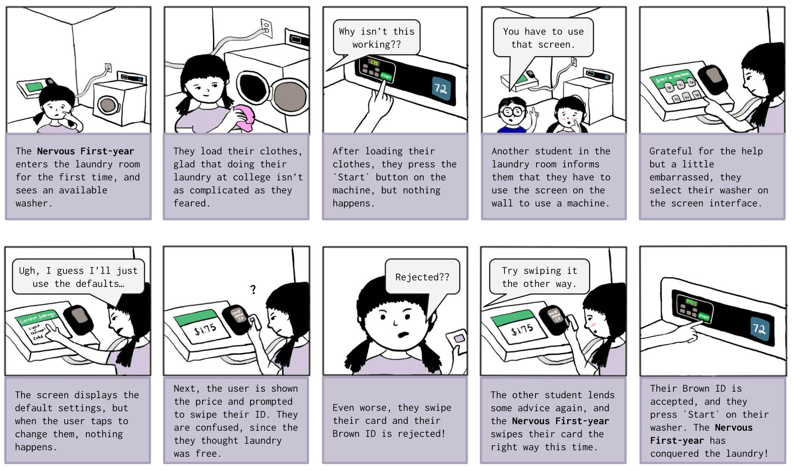

The case study describes my creation of personas to explore usability and accessibility of the laundry interface at Brown.
UI/UX Designer and Front-End Developer
February - March 2024
Figma, HTML, CSS
This case study examines a public interface through the lens of accessibility and usability, considering users with different experiences, needs, and abilities. The goal is to learn the perspectives of these users through interviews and observations, and ultimately create personas to understand how this interface does or does not meet the needs of these users.
I chose to examine the laundry machine screen in the dorm buildings at Brown University. This screen integrates closely with the washers and dryers themselves, but I will focus on the screen. The problem this interface is trying to solve is enabling students to do laundry. The touch screen, which is physically separate from the washers and dryers, is where users select machines and 'pay' (laundry is free for Brown students, although they must swipe their ID cards). The users press `Start` on the machines themselves after paying on the touch screen.
After creating my sketch of ths interace, I then brainstormed the questions I needed to ask users to understand how they use the interface and whether it meets their needs. Below is the list of questions, and if you click on one, you can read about what I hope to gain by asking each question.
This question indirectly gains an understanding of how long the interviewee has been using these laundry machines. Asking a student "About how many times have you used the laundry machines at Brown?" could lead to overestimation, in order to avoid appearing like they don't wash their clothes enough.
This question aims to understand the interviewee's main priority while they're washing their clothes, without asking directly what they care most about. This question should prompt users to talk about whether they're focused on getting their laundry done quickly, or thoroughly, or just to getting it done at all.
This question aims to get users thinking broadly about the laundry machine interfaces and give a general summary that might reveal their perspectives on the features or flaws of the system. This question also sets up the next couple of questions by prompting the interviewee to step into the mindset of a new user.
If the interviewee remembers their first experience with the laundry interface, they will hopefully recall the challenges faced when learning the system. This can reinforce areas of improvement for the interface in terms of learnability.
This is a follow-up question to 4 that aims to further explore whether or not the laundry interface meets new users' expectations. This further digs into the question of whether this interface is designed to be learnable, and what frustrations might be common in the process of using this interface.
Turning to focus on the interviewee's current use of the interface, this question aims to illustrate a user that is more experienced with the system and has learned its quirks. This also prompts the interviewee to consider how their experience has changed over time, and how the memorable and efficient the interface is.
Although this question is more direct than former questions, these previous questions have put the interviewee in a mindset of comparing their past and present experiences with the laundry interface. This question therefore aims to specifically understand how the laundry interface may still not be meeting the needs of experienced users.
Finally, this is an open-ended question that asks broadly about what the interviewee might change about the system. This change could reveal a feature that could make the interface more learnable, memorable, or efficient, or further highlight what flaws currently prevent the interface from meeting users' needs.
After preparing my questions, I observed 3 Brown students using this laundry interface in the Goddard dormitory. To respect their privacy as users, I made sure to receive consent before observing them. When interacting with the system, they did not need to input any sensitive information, and generally, I believe this system respects user privacy. Below is a summary of my observations:
The 3 students that I observed all interacted with the
laundry machine interface in a similar order of tasks. They each
poked their head into the laundry room to see if there were
available machines, loaded their laundry into either washers or
dryers, added their detergent, and approached the screen interface
on the wall. The first user I observed loaded clothes into two
washers, whereas the second used one washer and the third used one
dryer.
I noticed the first user taking their time with the
interaction. They pressed 'tap to get started', then selected the
first washer they had loaded. The screen changed to display the
washer's default settings (light soil, normal cycle, cold water).
The user seemed to want different settings, so they left the
screen and pressed buttons on the first washer to update the
settings. They returned to the screen, added their second washer,
approached their second washer to update the settings, then
returned to the screen. They finished the interaction slowly but
without a sense of confusion.
The second and third users completed their interactions with
more of a sense of urgency. Neither user changed the default
settings, and they quickly tapped through the options on the
screen, seemingly without much consideration.
However, the third user was slowed down by swiping their
Brown card with the wrong orientation the first time they tried.
They quickly swiped their card again facing the other direction,
quickly finished the pseudo-payment process, and pressed 'Start'
on their dryer.
MAIN TAKEAWAYS:
The users I observed differed in their senses of urgency
using the interface, as well as the number of machines used. The
main struggle I noticed was the third user swiping their card the
wrong way, which present an accessibility issue.
In addition to observing these users, I also asked them my questions, and their answers are summarized below:
1. What is your class year at Brown?
The
first and third students I interviewed were juniors, and the
second student was a sophomore. These students have all used this
laundry system for at least 3 semesters, and could be considered
experienced users.
2. Whenever it's time to interact with the laundry interface at
Brown, what's the main thing on your mind?
The first user didn't seem to understand the question, so I
clarified by asking what their main priority was when using the
laundry system. They answered that their main focus was checking
one of the chores off their list of weekend to-dos (I conducted
these interviews on a Sunday). The third also emphasized getting
it done and getting their clothes clean for the week. Somewhat
differently, the second user said their main focus was getting the
laundry done as quickly as possible, since sometimes when they try
to do it, there isn't a machine available.
3. How would you describe the laundry interface to someone who
has never seen it before?
The general pattern outlined was the process of
loading their machines, using the touch screen to select the
machines, swiping the Brown ID, and pressing `Start`. The third
user mentioned that you have to swipe your card with the metal
strip facing left, awknowledging that they mix this up a lot
(since a lot of the other card readers on campus are oriented the
opposite direction). The second user mentioned that its useful to
set an alarm on your phone to know when to pick up your laundry.
4. Describe your first time using the laundry screen at
Brown.
Each of the students had to think to recall their first time
using the screen to do their laundry. The first user described
that they didn't remember having any difficulty doing their
laundry at Brown since they've always done it at home. The second
user mentioned that they found the interface a little strange the
first few times they used it, since you need to swipe your Brown
ID, even though the laundry is free. The third user noted that
they had to ask another student for help the first time they used
the screen since they were confused about to select machines.
5. In that first experience using the laundry screen, did it
work as you expected it to?
Similar to the previous question, the interviewees didn't
exactly recall what they had expected the first time they used the
machines. The second user emphasized that their main expectation
was to get their clothes clean, and the screen interface enabled
that for them. Also, the first user noted that the touch screen
interface resembles and iPad, and it generally works the same as
an iPad, so their expectations were met.
6. Has your comfort using the laundry screen changed since your
first semester?
The general pattern in answers was that all 3
users had gained comfort using the laundry interface and machines
since their first time using it. The second user mentioned that
they no longer had to think about what they were doing when using
the screen interface, and just clicked the same buttons as always.
The third user also added that the time it took to do their
laundry was definitely less than the first time they did it.
7. Have you recently had any difficulties using the laundry
screen?
The first user mentioned that sometimes the
buttons on the laundry screen were slow to respond to taps, but
generally they had recently found the process smooth. The third
user again noted that the direction of the card reader was
annoying and tricky, but besides that, they hadn't had recent
issues. The second user did not recall any recent issues.
8. What would you change about how this laundry interface
works?
The third user suggested having a clearer label
indicating which way to swipe your Brown ID on the card reader
that's part of the interactive screen. The first user couldn't
think of any suggestions, and the second user proposed more clear
advice on how to use your phone to complete these interactions
(the app hasn't been working for them lately). While I think this
is a good idea, I asked if they had any suggestions for the
physical interface, and they didn't.
After recording my observations and conducting my interviews, I created two personas that represent patterns I identified in the 3 users I interviewed. This patterns of behavior and interaction with the interface are drawn from both their descriptions of their current interactions as well as those when they first used the interface. These two personas are represented in the two empathy maps below.
Nervous First-year Persona
This first persona depicts the Nervous First-year, who is one week into orientation at Brown and hasn't done their laundry yet.
The user's main problem is that they need to figure out how to use the screen interface in their process of doing the laundry.
The user sees the washers, and starts loading their clothes into a machine. They add their detergent and try to press the `Start` button, but nothing happens. With another student's help, the Nervous First-year realizes that they need to use the screen. With some difficulty, including swiping their card the wrong way and being unsure about settings, they eventually start their laundry.
This Nervous First-year represents users of the laundry interface, because it is common for students to find the interface confusing the first time they use it. These students also have many other things on their minds while doing their laundry, which this empathy map also reflects.
Rushed Upperclassman Persona
This empathy map displays the Rushed Upperclassman, who is doing their laundry in between studying for an exam.
This user is an upperclassman, and is comfortable with how the laundry machine interface works, so their main problem is getting their laundry done quickly.
The Rushed Upperclassman has tried to do their laundry before today, but the washers were all taken, and they're stressed because they have class soon.
The user empties someone else's finished washer, loads their clothes, and uses the screen to select the washer. They keep the default settings and swipe their card the wrong way, even though they've done this countless times. They swipe again and retreat to get some work done before class.
This persona represents the users of this interface because all Brown students are in a rush with many things to do. Also, one of the interviewees noted that they swipe their card wrong sometimes, even as a junior. This represents how experienced users still struggle with this interface.
After creating my personas for the Nervous First-year and the Rushed Upperclassman, I chose to create a storyboard for the Nervous First-year. The storyboard displays this user's entire user journey from start to end. As depicted below, the Nervous First-year is doing their laundry at college for the first time, and will face several challenges interacting with the laundry interface (with a main focus on the screen).
The User Journey of a Nervous First-year
The troubles that this Nervous First-year faced (including not knowing how to change the settings, swiping their card the wrong way, and not understanding why they need to swipe their card for a free service) are not necessarily isolated to new users. Many of the required actions are inaccessible to users with limit physical mobility, and increases the barrier to use. Beyond accessibility, as revealed in my interviews, these are also issues with all three components of the usability — learnability, memorability, and efficiency — of this screen interface.
My findings suggest improvements that Brown could make to their laundry system to better meet students' needs. For example, the university could stop requiring students to swipe their Brown ID, given that laundry is free and only Brown students can access the laundry rooms. Or, at least add a clearer affordance for which direction to swipe the Brown ID. This would save new and returning users time and increase the usability of this interface.
Regardless of these points for improvement, this case study was a useful exercise in understanding and illustrating users' needs and experiences based on my observations. This experience was also a great reminder of how important it is to design both physical and digital interfaces with accessible features in mind.
Thank you to those students who participated in interviews!